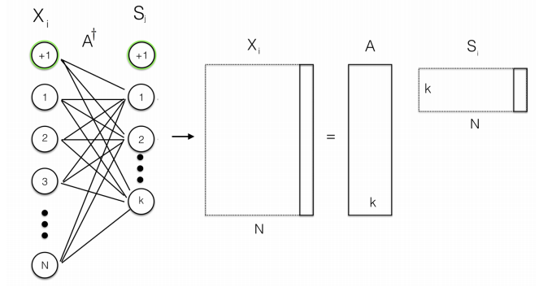
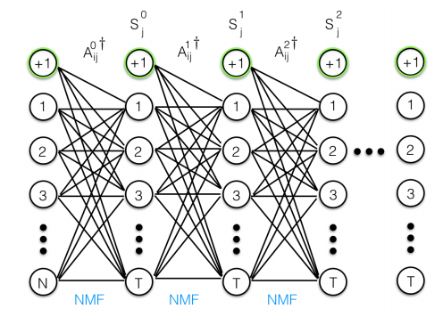

More complex NMF methods and their applications in omics integration
NMF for dimensionality reduction (lab)
Reccomend a multi-omic cause (gene/protein/metabolite) for a phenotipic effect, or the opposite.
Further read: - Seminal paper: NMF outperforms similar techniques at learning parts representation - Lee, D., Seung, H. Learning the parts of objects by non-negative matrix factorization. Nature 401, 788–791 (1999). https://doi.org/10.1038/44565
Observations: - NMF was historically the best hidden feature based image segmentation prior to CNNs - In comparison to other MF methods (especially the orthogonality enforcing methods), NMF hidden features are not independent, but overlapping, in a hierarchical manner (thus good for hierarchical clustering)
NMF - Non-Negative Matrix Factorization
Matrix factorization (MF): [Credit: Wikipedia]
Latent (hidden) factors:
Each sample (feature) can be described by k attributes. Example: How likely is it that a person suffers from a certain type of cancer?
Each observation (example: gene) can be described by an analagous set of k attributes or features. Example: How likely is it for the gene to be involved/co-regulated/induced etc in a certain type of cancer.
Hidden features: We don’t always know what these features are, how many are relevant. We learn them, or rather let the machines pick.
Model constraints: \(V\in\mathbb{R}_+^{m \times n}, V \approx WH, W \in \mathbb{R}_+^{m \times k}, H \in \mathbb{R}_+^{k \times n}\)
NMF is a subtype of MF where the additional requirement is that the initial matrix and the decomposed matrices are positive.
Why is non-negativity important? It implies the additivity of latent factors.
As an optimization problem: $ min~|V-WH|_F, V , W , H $
Frobenius norm. Fit function: $ F = {u,i} (v{ui} - w_u h_iT)2, v_{ui} w_u h_i^T = k{w{uk} h_{ki}}$
This is non convex optimization (no global minima)!
The number of latent factors is a result of global fitting
NMF - some intuitive examples from multi-omics:
V matrix (values matrix)
(weights, scores) W matrix
(hidden, loadings) H matrix
expression values (gene x samples)
genes x factors (metagenes)
factors (metagenes) x samples
protein counts (proteins x samples)
proteins x factors (domains)
factors (domains) x samples
multiomics observations (genes, proteins, etc x samples)
(genes, proteins, etc) x factors (multiomic features)
factors (multiomic features) x samples
multiple datasets (genes x samples x batches)
genes x factors (multi_batch domains)
factors (multi_batch domains) x samples
NMF - in general contexts:
V matrix (values matrix)
(weights, scores) W matrix
(hidden, loadings) H matrix
recommender systems (item x user)
items x factors (preferences)
factors (preferences) x users
collaborative filtering (user x user connections)
user x factors (communities)
factors (communities) x users
language processing (word distribution x document)
word x factors (topics)
factors (topics) x documents
facial recognition (faces x labels)
faces x factors (facial features)
factors (facial features) x labels
microscopy pictures (picture x samples)
pictures x factors (image segments)
factors x samples
spectrometry (spectra x sample)
spectra x factors (component molecules)
factors (component molecules) x samples
Solving NMF
Similar to ICA, PCA, MFA it can be classified as an unsupervised dimensionality reduction / clustering technique.
Uses the Frobenius norm, which is the matrix equivalent of the euclidean distance. But other cost functions are possible, that also include regularization. \[
\|X\|_F = \sqrt{\sum_i\sum_jx_{ij}^2}.
\]
Many algorithms exist, such as iterated coordinate descent (the original solver), hierarchical alternated least squares.
Main solver works iteratively via alternating non-negative least squares (ANLS) as: \[\begin{align}
W_{t+1} &= W_t^T \frac{XH_t^T}{XH_tH_t^T} \\
H_{t+1} &= H_t \frac{W_t^TX}{W^T_tW_tX}.
\end{align}\]
Weak convergence: it is reinitialized several times to avoid local minima, and the best result is kept.
Optimal number of k components (RSS scores for example, Silhouettes scores etc)
Alternating non-negative least squares (ANLS)
the iteration updates all of \(W\) together, then all of \(H\): \[
W := \operatorname{argmin}_{W \geq 0} \|V-WH\|_F^2 \\
H := \operatorname{argmin}_{H \geq 0} \|V-WH\|_F^2
\]
We can solve for each row of \(W\) (or column of \(H\)) independently by solving a non-negative least squares problem.
Non-negative least squares problems cannot be solved in a simple closed form! \[
\mbox{minimize } \|Vx-b\|^2 \mbox{ such that } x \geq 0;
\]
This it is a convex optimization problem that can be solved using any constrained optimization solver.
Widely used solver is the active set methods, that start from an initial non-negative guess and partitioning the variables into a free set and a constrained set, then updates these sets and the best positive guess.
NMF - multi omics usage observations
The different omics datasets have different scales and normalities, and this will impact your results (but it also depends on assumptions, on the goal of your study).
The second problem is enforcing the non-negativity constraint, which might imply additional transformations such as re-scaling and translating
To bring the different datasets Frobenius norms to the same baseline one can do: \[
X = \begin{bmatrix}
\frac{x^{1j}}{\sum_jx^{1j}} / \|\frac{x^{1j}}{\sum_jx^{1j}}\|_F \\
\frac{x^{2j}}{\sum_jx^{2j}} / \|\frac{x^{2j}}{\sum_jx^{2j}}\|_F \\
\vdots \\
\frac{x^{Nj}}{\sum_jx^{Nj}} / \|\frac{x^{Nj}}{\sum_jx^{Nj}}\|_F \\
\end{bmatrix},
\]
Comparison to PCA and autoencoders
Overall:
PCA is good at isolating feature that contain sufficient signal, but will transform the dataset in the direction of maximal variability
NMF will not have you lose the original features, you can see it as a data compression tool and has superior interpretability
Autoencoders are good for high dimensional complex datasets, but it is difficult to interpret your findings beside a simple clustering
Factors interpretability:
PCA: search for optimal rank k approximations, using it as a linear basis fit to re-write the data.
NMF: your data is written as a weighted sum of the basis you learn, but multiple basis can be just as good.
Autoencoder: fators are difficult to interpret, but can capture nonlinear effects.
What it tries to explain:
PCA: variation in the data (it is an SvD on the covariation matrix, performing sequential normalizations of data along axes of variation)
NMF: additive signal, the very purpose of NMF is to isolate distinct and interpretable signals (paterns) within the data
Autoencoder: an autoencoder simply tries to reproduce it’s original signal.
Dimensionality curse:
PCA: better at smaller datasets, covariation tends to be equal at large dimensions, good at isolating signal from noise from data
NMF: even better at small datasets, provided a good signal fit is found, good at isolating paterns
Autoencoder: better at complex and large datasets, were interpretability is not an end goal
Further read: - https://towardsdatascience.com/step-by-step-signal-processing-with-machine-learning-pca-ica-nmf-8de2f375c422 - https://towardsdatascience.com/autoencoders-vs-pca-when-to-use-which-73de063f5d7 - https://iqbalamo93.medium.com/pca-and-nmf-a-quick-walkthrough-f53d30a968fc
Toy dataset
Lets pretend that we manage to summarise the effective signal from several omics features in a cheap clinical test.
Each sample is a private individual. Our test is targeted on one of these afflictions: (cancer, melancholy, diabetes). These are hidden factors: We don’t always know what these features are, how many are relevant. We learn them, or rather let the machines pick.
Each individual is summarised by a few omics features. We will use NMF and collaborative filtering to extract knowledge from such a system.
John Alice Mary Greg Peter Jennifer
diabetes_gene1 0 1 0 1 2 2
diabetes_gene2 0 1 1 1 3 4
cancer_protein1 2 3 1 1 2 2
unclear 1 1 1 0 1 1
melancholy_gene 0 2 3 4 1 1
cofee_dependency_gene 0 0 0 0 1 0
Intuitively we can see that the users (samples) are conected to their items (genes) via a hidden scheme, that could simplify this table. The elements of such a hidden scheme we call hidden (latent) factors. Here is a possible example:
print("\n\n H - coefficients matrix (factors, samples):")print(H)
H - coefficients matrix (factors, samples):
John Alice Mary Greg Peter Jennifer
latent1 0.00 1.95 0.00 0.41 9.68 11.86
latent2 4.32 4.96 1.22 0.00 2.48 2.10
latent3 0.00 0.88 1.30 1.76 0.43 0.44
Can we figure out the hidden factors? We can do this in one of two ways, if we know the real afflictions, or as it is in our toy model, we only know the effect of our omics features. Thus, we have to look into W (weights or factors matrix)
melancholy_gene has the strongest weight on latent 3. Latent3 also contains strong weights for all other afflictions but it is separating well only the melancholy factor.
latent1 contains strong weights for diabetes.
latent2 contains strong weights for the cancer protein
John Alice Mary Greg Peter Jennifer
Diabetes 0.00 1.95 0.00 0.41 9.68 11.86
Cancer 4.32 4.96 1.22 0.00 2.48 2.10
Melancholy 0.00 0.88 1.30 1.76 0.43 0.44
Diabetes Cancer Melancholy
diabetes_gene1 0.17 0.03 0.37
diabetes_gene2 0.30 0.00 0.58
cancer_protein1 0.07 0.47 0.49
unclear 0.04 0.21 0.16
melancholy_gene 0.00 0.00 2.29
cofee_dependency_gene 0.04 0.00 0.00
Example findings: - What disease is NMF suspeting for Jennifer? Indeed, it is diabetes. We would not know this from a PCA study, because some of the scores can be negative and so are some of the loadings. The cumulative effect is obscured by the linear transformations. - The “unclear” feature is strongly related to cancer.
Hipothesis hunting: W x H is an approximation of V, so by transforming the dataset based on the NMF model we can learn some new things.
John Alice Mary Greg Peter Jennifer
diabetes_gene1 0.13 0.81 0.52 0.72 1.88 2.24
diabetes_gene2 0.00 1.10 0.75 1.14 3.15 3.81
cancer_protein1 2.03 2.90 1.21 0.89 2.05 2.03
unclear 0.91 1.26 0.46 0.30 0.98 0.99
melancholy_gene 0.00 2.02 2.98 4.03 0.98 1.01
cofee_dependency_gene 0.00 0.08 0.00 0.02 0.39 0.47
Jennifer and Peter are both suspected diabetes based on their H values.
Peter is showing signal on the coffee dependency gene in the initial dataset. The model infers that maybe the signal for that gene was lost during processing. The model predicts even higher signal on that gene than Peter has. This is based on how similar Jeniffer is to Peter compared to all the other patients.
This is the essence of collaborative filtering: People that share the same signals in certain kind of diseases will also share the same signals in some other kind of features.
Why is NMF so important?
Because it provides an intuitive interpretation of the results, due to its enforcement of the positive values rule.
The higher the factor weight, the more “determined” the column (segment) is
First components are more “determined” based on the data.
During the lab, you will learn to reccomend interesting gene therapies to cancer patients, based on their hidden subtypes!
Reference: For the toy example I drew inspiration from the following Medium article: - https://medium.com/logicai/non-negative-matrix-factorization-for-recommendation-systems-985ca8d5c16c
NMF usage observations and applications
NMF has many solvers, that are ultra efficient: - multiplicative update algorithms - Alternating Least Square - NMF based on projection gradient algorithms - PNMF probabilistic nonnegative matrix factorization
Multiple normalities
A basic transformation to allign the norms was described before!
However if the omics datasets have widely different distribution it can happen that one omics dataset will drive all variational signal in the data.
In such case a more thorough transformation may be necessary (for example via methods such as iCluster+, MOFA, etc) prior to applying NMF.
Should data be normalized before coercing it into a matrix factorization model?
Generally yes, and this generally goes before any application of machine learning to real data.
If the normalization is a big issue for your data (such as huge differences in scale) then you should opt for Tree Boosting methods (random forest, ensemble learning) or SNF, rather than matrix factorization.
In matrix factorization the variables are not considered independently, instead everyting is dependent (linearly) on everything else.
Missingness and regularization
Biological data usually contain missing values. How can the matrix factorization handle it?
Use initialization methods such as nndsvd that are friendlier towards sparse matrices is number one.
For the optimization norm I would pick KL if you have large matrices with a lot of missingness. Rather than doing distances KL would evaluate changes in how data is distributed.
Also note that you can add a regularization term to the fitness function. This does not help directly but in sparse datasets it is easy to get trapped in local optima.
Yuan Gao, George Church, Improving molecular cancer class discovery through sparse non-negative matrix factorization, Bioinformatics, Volume 21, Issue 21, , Pages 3970–3975, https://doi.org/10.1093/bioinformatics/bti653
Brunet et al., 2004, Metagenes and molecular pattern discovery using matrix factorization PNAS, Mar 2004, 101 (12) 4164-4169; https://doi.org/10.1073/pnas.0308531101
cancer subtyping in microarrays, dealing with sparse data
not an integrative example, but one about treating sparsity
rank estimation of NMF models
the representation learned is sparse and hierarchical
\(A \approx WH\) The more sparse the matrix of H, the more sparse is the feature matrix W. Therefore, enforcing the sparseness of H will give rise to metagenes that comprised few dominantly deterministic genes.
jNMF - the MOFA of NMFs
Fujita, N., Mizuarai, S., Murakami, K. et al. Biomarker discovery by integrated joint non-negative matrix factorization and pathway signature analyses. Sci Rep 8, 9743 (2018). https://doi.org/10.1038/s41598-018-28066-w
biomarker discovery
is theoretically and practically equivalent to a standard NMF method with concatenated inputs
common clusters (co-modules) from mRNA expression, microRNA expression, and DNA methylation data of cancer patients
NMF method was modified to deal with missingness, by using a mask
https://rdrr.io/cran/nnTensor/man/jNMF.html
single cell follow-up: SC-JNMF: Single-cell clustering integrating multiple quantification methods based on joint non-negative matrix factorization, Shiga et al, 2020, preprint at https://www.biorxiv.org/content/10.1101/2020.09.30.319921v1.full.pdf
iNMF - for active learning
Zi Yang and George Michailidis, A non-negative matrix factorization method for detecting modules in heterogeneous omics multi-modal data, https://doi.org/10.1093/bioinformatics/btv544
similar to jNMF (based on it) but it uses online learning, this means that one can add information sequentially to improve the model , code here: https://github.com/yangzi4/iNMF
got a pytorch module: https://pypi.org/project/nmf-torch/
Used recently in a method for online learning of integrative omics for single cell:
Gao, C., Liu, J., Kriebel, A.R. et al. Iterative single-cell multi-omic integration using online learning. Nat Biotechnol (2021). https://doi.org/10.1038/s41587-021-00867-x
Deep NMF - a novel paradigm, doing MF as part of a deep NN
Flenner, J., & Hunter, B. (2017). A Deep Non-Negative Matrix Factorization Neural Network.
Normal NMF is performed by a single encoding layer
 - Deep architecture: CNN, with backpropagation, each NMF layer performs a hierarchical decomposition 
Attention networks
NMF can be used to focus attention mechanisms in NNs.
Chen et al, Attention-Based Multi-NMF Deep Neural Network with Multimodality Data for Breast Cancer Prognosis Model, Volume 2019 |Article ID 9523719 | https://doi.org/10.1155/2019/9523719
NMF for single cell experiments
general trends: Bayesian modeling for data sparsity, improvement of model fitting and multi-processing.
Applications in single cell analysis, pathway enrichment, etc
Detecting heterogeneity in single-cell RNA-Seq data by non-negative matrix factorization, Zhu et al, 2017, https://pubmed.ncbi.nlm.nih.gov/28133571/ > In comparison to other unsupervised clustering methods including K-means and hierarchical clustering, NMF has higher accuracy in separating similar groups in various datasets. We ranked genes by their importance scores (D-scores) in separating these groups, and discovered that NMF uniquely identifies genes expressed at intermediate levels as top-ranked genes.
CoGAPS 3: Bayesian non-negative matrix factorization for single-cell analysis with asynchronous updates and sparse data structures, Sherman et al, 2020, https://pubmed.ncbi.nlm.nih.gov/33054706/
Bayesian semi-nonnegative matrix tri-factorization to identify pathways associated with cancer phenotypes, Park et al, https://pubmed.ncbi.nlm.nih.gov/31797616/
Matrix Factorization - beyond NMF
Scluster method (a mix of MF and SNF): integrates different types of data and maps them into an effective low-dimensional subspace. First, Scluster uses adaptive sparse reduced-rank regression (S-rrr) to map the original data into the principal subspaces. Next, a fused patient-by-patient network is abstracted for these subgroups by a scaled exponential similarity kernel method. It can then obtain the cancer subtypes by spectral clustering.
https://pubmed.ncbi.nlm.nih.gov/28113782/
SRF : rank based multi-view bi-clustering, very related to NMF, possibly reducible to it, it does subtyping and identification of subtype-specific features simultaneously.
https://pubmed.ncbi.nlm.nih.gov/27587661/
Software and bibliography:
Python:
recommender systems library: http://surpriselib.com/
Simultaneous Non-negative Matrix Factorization (siNMF) : Extracting Gene Expression Profiles Common to Colon and Pancreatic Adenocarcinoma using Simultaneous nonnegative matrix factorization, Liviu Badea, Pacific Symposium on Biocomputing, 13:279-290, 2009,
Discovery of multi-dimensional modules by integrative analysis of cancer genomic data. Shihua Zhang, et al., Nucleic Acids Research, 40(19), 9379-9391, 2012
Probabilistic Latent Tensor Factorization, International Conference on Latent Variable Analysis and Signal Separation, Y. Kenan Yilmaz et al., 346-353, 2010
 [Credit: Wikipedia]
[Credit: Wikipedia]